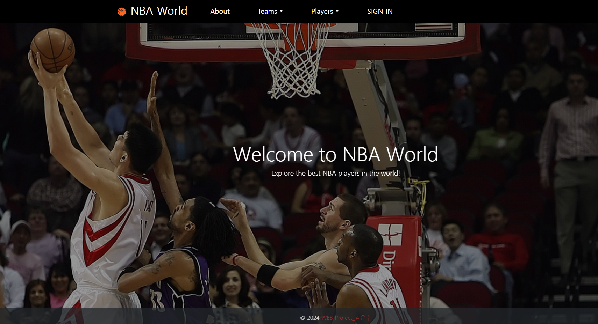
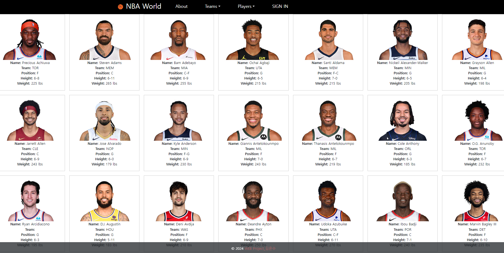

PERSONAL PROJECT
NBA 데이터를 수집하고 관리할 수 있도록 구현한
첫 개인 웹 프로젝트


좋아하던 NBA를
직접 서비스로 만들어보고 싶었습니다.
NBA를 좋아하는 마음에서 시작했지만, 단순한 팬 페이지를 넘어서 데이터를 수집하고 저장하고 보여주는 흐름을 직접 구현하는 것을 목표로 했습니다.
Node.js와 Express를 기반으로 서버를 구성하고, MongoDB와 연동해 선수, 팀, 사용자 데이터를 관리하며 백엔드 서비스의 기본 구조를 직접 구현했습니다.
이 프로젝트는 완성도 높은 결과물을 만드는 것보다, 웹 서비스가 어떻게 동작하는지를 직접 구현하며 이해하는 데 목적이 있었습니다.
REST API 서버 구현
Express를 활용해 클라이언트 요청을 처리하고, 데이터 조회 및 응답을 수행하는 API를 구현했습니다.
MongoDB 연동
선수, 팀, 사용자 데이터를 MongoDB에 저장하고 CRUD 작업을 통해 데이터를 관리했습니다.
웹 크롤링 기반 데이터 수집
NBA 공식 사이트에서 선수 데이터를 스크레이핑하여 서비스에 활용할 수 있도록 구성했습니다.
사용자 인증 기능 구현
로그인, 로그아웃 기능과 함께 비밀번호 해싱 기반 인증 처리를 구현했습니다.
MVC 구조로 프로젝트 구성
controller / model / view 구조로 분리하여 역할 기반 구조 설계를 적용했습니다.
기능을 만들기 전에,
요청 → 처리 → 응답 흐름을 먼저 이해하려 했습니다.
요청 흐름 이해
클라이언트 요청이 서버를 거쳐 DB와 연결되고, 다시 응답으로 돌아오는 구조를 직접 구현했습니다.
데이터 구조 설계
MongoDB 스키마를 구성하며 어떤 데이터를 저장하고 어떻게 조회할지 고민했습니다.
API 분리 및 구조화
기능별로 controller를 나누어 유지보수 가능한 구조를 만들려고 했습니다.
초기 구조 설계 부족
처음에는 기능 중심으로만 구현하다 보니 코드가 복잡해졌고, 이후 controller 분리로 구조를 개선했습니다.
데이터 흐름 이해 부족
요청과 응답의 흐름을 정확히 이해하지 못해 디버깅에 시간이 오래 걸렸지만, 이를 통해 서버 구조를 더 깊이 이해하게 되었습니다.
처음으로,
서비스의 전체 흐름을 경험했습니다.
백엔드 구조를 처음 이해했습니다.
REST API, DB 연동, 인증까지 연결하며 서버 개발의 기본 구조를 경험했습니다.
데이터와 기능 연결 경험
데이터를 단순히 저장하는 것이 아니라 실제 기능으로 연결하는 경험을 했습니다.
구조 설계의 중요성
코드보다 구조가 더 중요하다는 것을 느꼈고, 이후 프로젝트에서 흐름 중심으로 설계하게 된 계기가 되었습니다.